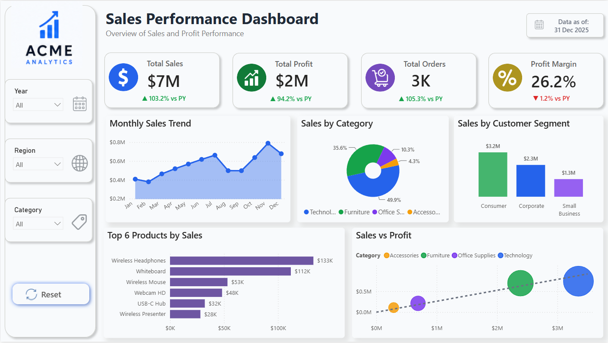
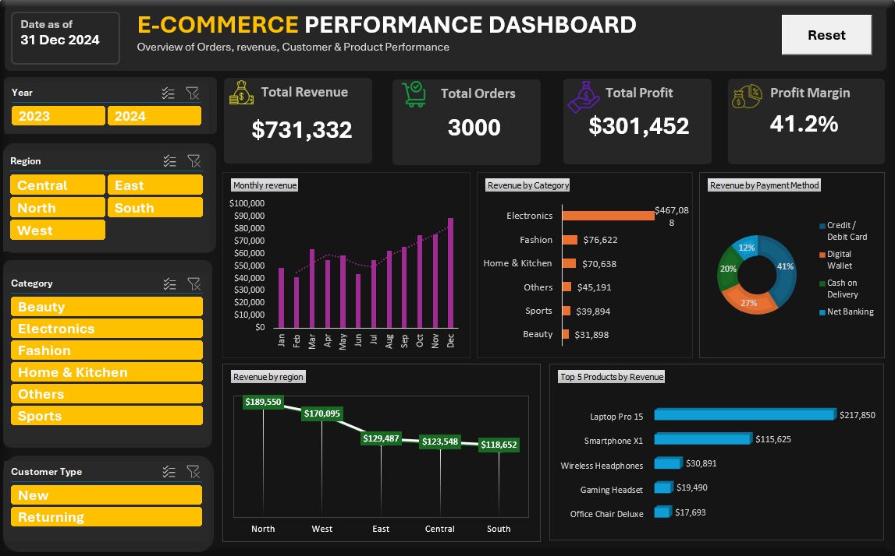
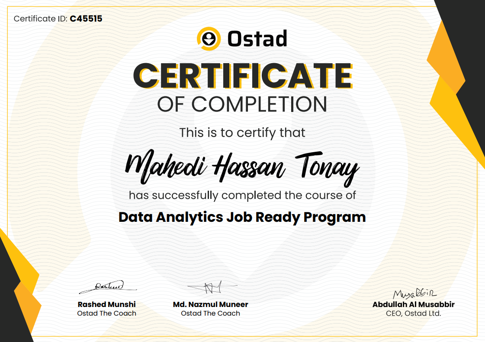
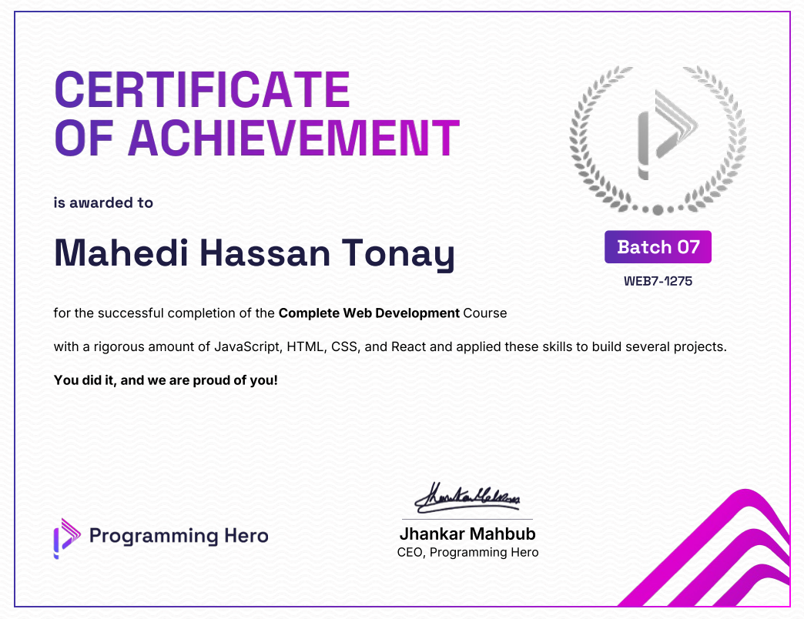

Seeking Data Analytics Internship
Opportunities
I turn data into clear business stories.
I’m Mahedi Hassan Tonay, a Bachelor of Information Technology student who has independently developed practical data analytics skills through training and hands-on projects. I build interactive dashboards and structured analyses using Power BI, SQL and Excel, with an additional background in modern web development.
Focus
Data Analytics
Power BI · SQL · Excel
Also building
Frontend Development
HTML · CSS · JavaScript · React
POWER BISQLEXCELDAXPOWER QUERYDATA MODELLINGREACT
01 — About me
Building a data-focused career with a broader technology foundation.
I am completing my Bachelor of Information Technology while building a separate, practical skill set in data analytics through focused training, self-learning, and portfolio projects.
My portfolio includes Power BI, SQL-to-Power-BI, and Excel projects covering sales, HR, logistics, retail, customers, stores, employees, and returns. I focus on data modelling, DAX, KPIs, dashboard design, filtering, and turning raw information into clear insights.
I also have a web-development background and one complete MERN stack application. I treat that experience as a complementary strength: it helps me understand interfaces, APIs, databases, and how data moves through real systems.
Analytics first
Power BI, SQL and Excel are the centre of my current portfolio and career direction.
Business-focused dashboards
Designing KPIs, trends, filters and visuals around practical business questions—not just charts.
Technical versatility
Web-development knowledge gives me additional context around databases, APIs and digital products.
02 — Skills
A focused analytics toolkit, supported by development knowledge.
Primary
Data Analytics & BI
Interactive dashboard development, KPI design, business analysis, data transformation and visual storytelling.
Core
SQL & Data
Working with relational data, queries, views, joins and database-to-dashboard workflows.
Secondary
Frontend Development
Responsive, modern interface development with a growing frontend skill set. This section is intentionally easy to expand as I add more technologies.
03 — Selected projects
Analytics projects that show range, progression and practical thinking.
Featured · Advanced
PeoplePulse — HR & Workforce Intelligence
A five-page workforce intelligence solution built on a structured HR data model, covering headcount, attrition, recruitment, performance and compensation with advanced DAX-driven KPIs.
Advanced BI
Supply Chain & Logistics Intelligence
A three-page operations intelligence solution combining shipment, delivery, carrier and inventory analysis with cost, service-level and year-over-year performance tracking.
SQL + Power BI
RetailEdge — SQL + Power BI Retail Analytics
An end-to-end retail analytics solution that transforms a relational MySQL database into reusable analytical views and a four-page Power BI report spanning sales, customers, products, stores, employees, deliveries and returns.

Power BI · Single PageSales Performance Dashboard — Power BI
A focused single-page sales analytics report built on a star schema, combining core commercial KPIs, prior-year comparisons, product performance and interactive business filters.

ExcelE-Commerce Performance Dashboard — Excel
An Excel-only e-commerce analysis built from 3,000 order records, using PivotTables, PivotCharts, slicers and calculated metrics to analyse revenue, profit, regions, categories, products and payment behaviour.
04 — Certifications
Structured learning behind the practical work.

Professional certificate
Data Analysis
Power BI, Excel, SQL fundamentals, data cleaning, visualisation and analytical reporting.
View certificate ↗
Professional certificate
Web Development
HTML, CSS, JavaScript, React and modern web-development foundations.
View certificate ↗05 — Current direction
From IT foundations to a focused analytics portfolio.
Bachelor of Information Technology
Completing the final stage of my degree while preparing for internship and entry-level opportunities.
Data Analytics Portfolio
Building practical Power BI, SQL and Excel projects that demonstrate analysis, modelling, reporting and dashboard design.
MERN Stack Development
Completed web-development training and one full MERN application, providing a broader understanding of software and data systems.
06 — Contact
Let’s turn data into something useful.
I’m open to data analytics internship and junior opportunities. The quickest ways to reach me are below.